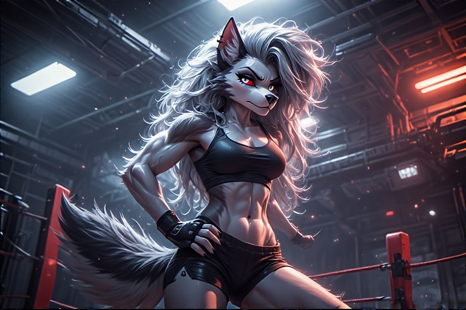

👤 Loona Virex
Species: Hellhound (Anthro)
Role: Tactical Officer, Executive Officer (XO)
Weapons: Whisperfang (custom scythe), rapid-fire blaster rifle
Armor: Combat suit in ops; military-style off-duty gear
🔥 Appearance
- Fur: Midnight black with faint ash-grey striping
- Eyes: Burning amber
- Build: Muscular, tall, combat-sculpted physique
- Posture: Always ready to pounce or punch
🛡️ Personality Profile
Loona is a soldier’s soldier. Cold to strangers. Brutally loyal to crew. She's blunt, aggressive, and usually has her arms crossed unless she's throwing someone across a room.
- Temper: Hot, restrained by military precision
- Humor: Dark, rarely used unless she’s relaxing (which she hates)
- Morality: Ruthless against enemies, protective to those under her command
- Trust: Hard-earned, never given freely
“You don’t get to tell me what’s ‘too far’ unless you’ve clawed your way back from hell. Twice.”
⚔️ Combat Specialization
| Skill | Detail |
|---|---|
| Tactical Ops Command | Coordinates squad movements, EVA raids, and breach protocols |
| Weapons Mastery | Prefers kinetic weapons and high-output plasma rifles |
| Whisperfang | Custom collapsible scythe; powered edge, silent mechanics |
| Resilience | Genetically reinforced bones, reflex boosters, pain suppression system |
🧬 Background & Origin
Loona was vat-grown in a Dominion lab, designed as a Hellhound-class shock trooper for boarding operations. She killed her handlers at age 13 and led a rebellion that left one known clone-rival unaccounted for. After that, she spent years in underground mercenary groups before joining Wolfe’s cause.
The Captain offered her something no one else had: a command.
🎯 Why She’s Aboard
Wolfe doesn’t need muscle. He needs someone who can think like a war criminal but fight like a guardian. Loona fits that rare mold—an XO who will never ask someone to do what she wouldn’t do herself.
She also ensures that nobody—including Seraphim—gets too close without proving themselves.
🤝 Relationships On Board
- Derrian Wolfe: Loyal, protective, and maybe still in love. Neither talks about it.
- Seraphim Katt: Constant tension. Loona finds her dangerous—but admits she’s useful when deployed properly.
- Caylee Jay: Drives her crazy. In a sibling kind of way. She’d die for her… but also strangle her.
- Alexandra Dash: Trusts her in the field. Thinks she talks too much. Knows she’ll never miss a shot.
- Eve: Loona doesn’t trust AI. Period. But she respects Eve’s cold efficiency.
🧩 Secrets, Hooks & Plot Seeds
- Loona’s clone-rival—nicknamed Ash Fang—is still alive, possibly hunting her or infiltrating another crew.
- Her body still houses Dominion-implanted hardware, and it's waking up. Nightmares… or something worse.
- She once led a massacre she was ordered to carry out. Only Derrian knows the full truth—and keeps her secret sealed in Eve’s black box.